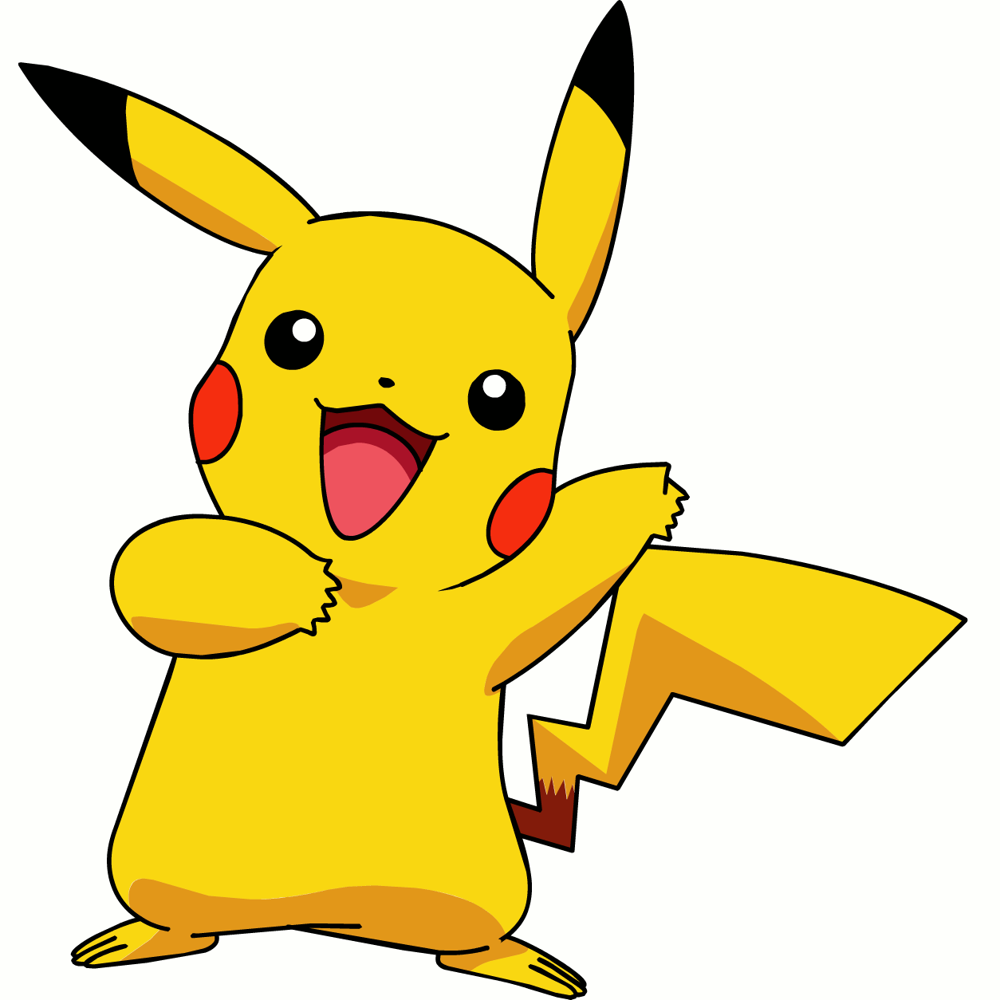
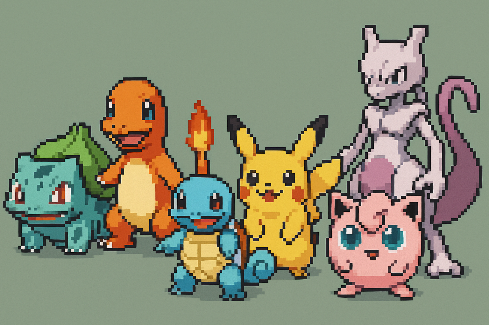
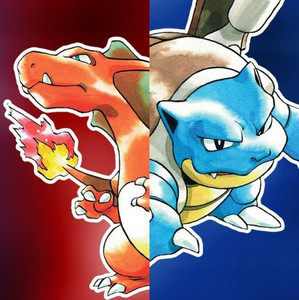
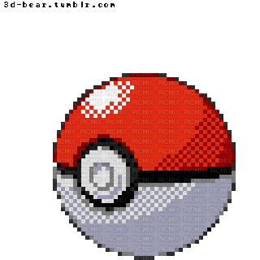
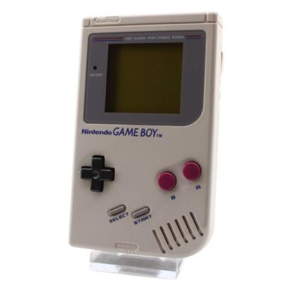

| Menú: |
 |

A finales de los 90, Pokémon se volvió un fenómeno global con Rojo y Azul, presentando Kanto y sus 151 criaturas. El cable link para intercambiar, las batallas en el recreo y mitos como MissingNo marcaron a toda una generación.
Con Oro y Plata llegó Johto: 100 nuevos Pokémon, reloj en tiempo real y la sorpresa de volver a Kanto tras la Liga. Junto al anime y las cartas, esta etapa consolidó a Pokémon como ícono cultural de los 90.
| Consola | Game Boy / Game Boy Color |
| Regiones | Kanto (Gen I), Johto (Gen II) |
| Objetivo | Ganar 8 medallas, completar la Pokédex y enfrentar al Alto Mando |
Recuerdos de cartucho:



| # | Pokémon | Tipo | Dato Retro | Imagen |
| 001 | Bulbasaur | Planta/Veneno | Starter doble tipo desde nivel 1 | |
| 004 | Charmander | Fuego | La línea más popular para speedruns | |
| 007 | Squirtle | Agua | Defensa sólida para los primeros gimnasios | |
| 025 | Pikachu | Eléctrico | Protagonista del anime con Ash en los 90 | |
| 039 | Jigglypuff | Normal/Hada* | *En los 90 era solo Normal | |
| 150 | Mewtwo | Psíquico | Jefe post-juego en la Cueva Celeste | |
Historia, guías y colecciones clásicas: